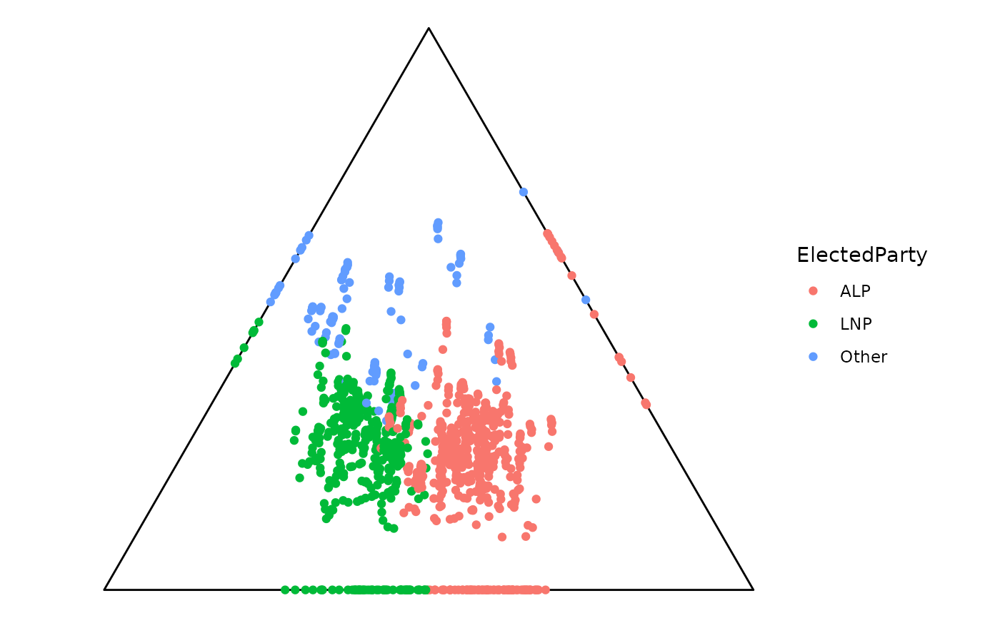

Getter functions to extract components from ternable object for ternary plots
Source:R/ternable_getters.R
ternary_getters.RdPerforms additional transformations on ternable object components, making it
ready for both 2D ternary plot with ggplot2 and
high-dimensional ternary plots with tourr.
Usage
get_tern_data2d(ternable)
get_tern_datahd(ternable)
get_tern_edges(ternable, include_data = FALSE)
get_tern_labels(ternable)Arguments
- ternable
A ternable object created by
as_ternable().- include_data
Logical. Only in
get_tern_edges(). IfTRUE, return data edges, along with simplex edges. IfFALSE, only return simplex edges.
Value
get_tern_data2d(): A data frame augmenting the original data with its ternary coordinates (x1,x2). Used as input data for 2D ternary plot withggplot2.get_tern_datahd(): A data frame combining the simplex vertices with the original data and ternary coordinates. Thelabelscolumn contains labels for the vertexes and""for data rows. Pass the coordinate columns (dplyr::select(starts_with("x"))) totourrand use thelabelscolumn directly forobs_labels.get_tern_edges(): A matrix of simplex edge connections for drawing the simplex boundary.If
include_data = FALSE, the matrix contains only the simplex edges. Equivalent toternable$simplex_edges.If
include_data = TRUE, the matrix combines the simplex edges with the data edges. Used when you want to draw lines between the data points.
Details
These functions are designed to work together for creating animated tours of high-dimensional ternary data:
get_tern_datahd()provides both the point coordinates and observation labelsget_tern_edges()provides the simplex structure
Deprecated
get_tern_labels() is deprecated as of version 0.1.2. Use
get_tern_datahd(ternable)[["labels"]] instead.
See also
as_ternable() for creating ternable objects
Examples
library(ggplot2)
# Create a ternable object
tern <- as_ternable(aecdop22_transformed, ALP:Other)
# Use with tourr (example)
if (FALSE) { # \dontrun{
tourr_data <- get_tern_datahd(tern)
tourr::animate_xy(
dplyr::select(tourr_data, starts_with("x")),
edges = get_tern_edges(tern),
obs_labels = tourr_data[["labels"]],
axes = "bottomleft")
} # }
# Use with ggplot2 (example)
ggplot(get_tern_data2d(tern), aes(x = x1, y = x2)) +
add_ternary_base() +
geom_point(aes(color = ElectedParty))
